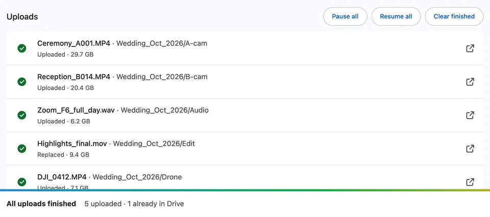

How do I replace a file in Google Drive without changing the link?
Published · Updated · By Sai Nath
Upload the new file as a new version of the old one: on drive.google.com, click the file, then More ▸ File information ▸ Manage versions ▸ Upload new version. It stays the same file, so its link and sharing don't change. Drive can delete old versions after 30 days or 100 newer versions unless you choose Keep forever.
This guide comes from the maker of Uploft, the Chrome extension mentioned below. Google's steps and rules link to Google's own pages and were checked on 29 October 2026; what the extension does comes from its source code.
How to upload a new version of a file
- On your computer, go to drive.google.com.
- Click the file you want to replace.
- At the top right, click More (⋮) ▸ File information ▸ Manage versions.
- Click Upload new version and choose the new file.
Uploading into the same folder works too. Google's upload help says that if you upload a file with the same name, "Google Drive will upload the file as a revision of the file already in Google Drive". If you want two separate files instead, click Keep both files when you upload.
Do the link and sharing stay the same?
Yes. A new version replaces the file's contents, but it stays the same file in Drive, with the same file ID. A Drive file link (drive.google.com/file/d/file ID/…) is built from that ID, so the links people already have keep opening the file, now with the new contents, and the people it is shared with keep their access. Google also notes that when you upload a new version of a file someone else owns, "the original owner remains the same".
How long does Drive keep the old version?
Google says a version "might be permanently deleted after 30 days or if there are 100 newer versions". To keep one, open Manage versions, click More next to that version and choose Keep forever; a tick shows it won't be deleted. From the same list you can Download an older version, or Delete one you don't need.
Does this work for Google Docs, Sheets and Slides?
No. Google says version history for Docs, Sheets and Slides "is different than file versions in Google Drive". You edit those files in place, so their link doesn't change, and earlier states are in their own version history, as Google's Docs Editors Help describes. Manage versions is for uploaded files, such as PDFs, images, videos and other files stored in Drive.
What if I delete the old file and upload the new one?
Then it's a different file. The new upload gets its own ID and its own link, the old file's sharing doesn't carry over to it, and the old link no longer opens it. Anyone you shared the old file with would need the new link. Upload a new version instead, as above.
How do I replace many files at once?
Manage versions works one file at a time. When you upload an updated folder again, Uploft's uploader can do the whole folder in one go. In the uploader, set If already in Drive to Replace it, choose the destination folder and drop the folder in:
- A file with the same name in the same Drive folder, one the extension uploaded earlier, is uploaded as a new version of it, so its link and sharing stay, and Drive keeps the old one under Manage versions.
- Files that haven't changed, meaning the same size and modified time, are skipped, so nothing is uploaded twice.
- New files are uploaded as new files, and subfolders keep their structure.
The three settings compare each file with a file of the same name in the destination folder:
| Setting | Same name and size | Same name, different size |
|---|---|---|
| Skip it (the default) | Skipped: "Already in Drive, skipped" | Uploaded as a second file with the same name |
| Replace it | Skipped if the modified time matches too; if not, a new version | A new version of the file in Drive: "Replaced" |
| Keep both | Uploaded as a second file | Uploaded as a second file |

Replace spots an unchanged file by its modified time: the uploader sets each file's modified time in Drive to the file's own modified time on your computer, so a file you haven't touched matches exactly.
Why doesn't Replace match files I uploaded another way?
Because the extension uses Google's narrowest Drive permission, drive.file, which Google's list of permissions describes as "See, edit, create, and delete only the specific Google Drive files you use with this app". The uploader can see the files it uploaded and the folders you pick for it in Google's folder picker, and nothing else. A file you put in that folder through drive.google.com or another app is invisible to it, so with Replace it on, the uploader adds a second file with the same name next to it. For those files, use Manage versions in Drive.
What are the limits?
- Skip and Replace only know about files the extension uploaded itself.
- When a folder already holds several files it uploaded with the same name, Replace updates the one modified most recently.
- Old versions follow Drive's rules: they can be deleted after 30 days or 100 newer versions unless you keep them forever.
- Google Docs, Sheets and Slides can't be replaced by uploading; they keep their own version history.
- It runs in Chrome 116 or later on a computer, and it isn't on the Chrome Web Store yet.
Uploft is free, and its source code is public. It isn't on the Chrome Web Store yet; the home page shows what it does and what it asks for.
Sources
Checked on 29 October 2026.
- Google Drive Help: Check activity & file versions (Manage versions, retention, Keep forever).
- Google Drive Help: Upload files & folders to Google Drive (files with the same name).
- Google Docs Editors Help: Find what's changed in a file.
- Google for Developers: OAuth 2.0 Scopes for Google APIs and Choose Google Drive API scopes (drive.file).
- Uploft: source code (Skip, Replace and Keep both) and privacy policy (what the drive.file permission lets it see).